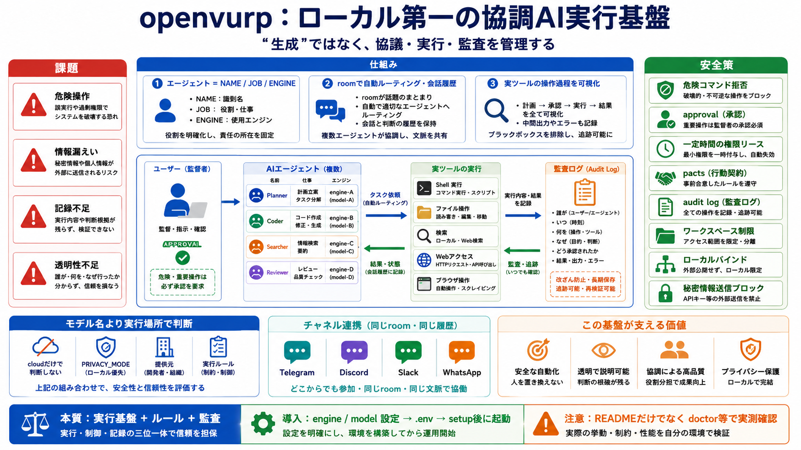

AI Agent Frameworks (2026 Update): 8 SDKs Compared + the ...
At 52,400+ GitHub stars and roughly 5 million monthly downloads (27 million-plus on PyPI overall), CrewAI has the larges…

識別子（会話参加者/記録の核）
“誰に聞くべきか”の判断材料
LLMモデル/接続先（実行の責任）
Shell / ファイル / 検索 / Web / ブラウザ
どの計算・どの操作が行われたか
危険コマンドを実行しない
ユーザー確認を要求する
監査ログで後から追える
ワークスペース制限・ローカルバインド
秘密情報の外部送信を抑える発想
Telegram / Discord / Slack / WhatsApp
同じ履歴・同じroomの再現
:cloud などのラベル
PRIVACY_MODE / 判定ロジック
提供元（Ollama等）で決まる
engine / model / Telegramトークン
.env作成 → setup完了後に起動
危険操作拒否 / ファイル範囲 / 監査ログの完全性
doctor等で動作確認し、実測で妥当性を確かめる
実行基盤 + ルール + 監査
approvalとテストで有効性を確かめる
At 52,400+ GitHub stars and roughly 5 million monthly downloads (27 million-plus on PyPI overall), CrewAI has the larges…
Build AI agent security frameworks that scale across enterprise systems. Implement unified controls for identity, access…
Privilege escalation — `sudo`, `su`, `doas`, `pkexec`, `runas` Destructive deletion — `rm -rf /`, `rm -rf ~`, `rm -rf /…
AI agent frameworks are software libraries or platforms that support the development, deployment, and management of inte…
This paper presents a systematic examination of the AI security landscape as it stands in 2025–2026. We begin by charact…